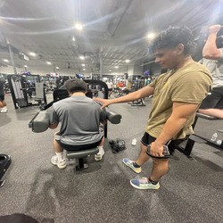
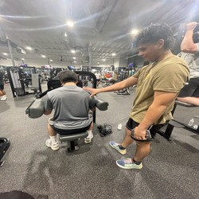
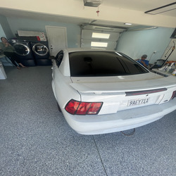
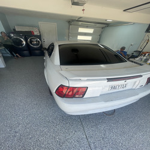
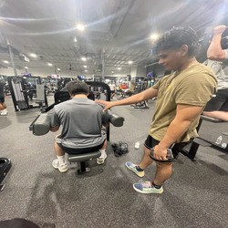
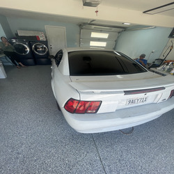

Angel Mendez
My name is Angel Mendez and I am an aspiring accountant. I had the valuable opportunity to intern as an accountant, and the experience has significantly contributed to my professional growth and understanding of financial operations. I had the valuable opportunity to intern as an accountant, and the experience has significantly contributed to my professional growth and understanding of financial operations. During my internship, I actively engaged in various accounting tasks, from reconciling financial statements to analyzing budget reports. This hands-on experience allowed me to apply theoretical knowledge gained from my academic studies to real-world scenarios. I collaborated closely with experienced professionals, learning from their expertise and gaining insights into the intricacies of financial management. Additionally, I enhanced my proficiency in utilizing accounting software and honed my analytical skills, which are crucial in the field. The internship provided me with a holistic view of accounting practices, solidifying my commitment to pursuing a career in finance. Overall, it was a rewarding and insightful journey that has equipped me with practical skills and knowledge for my future endeavors in the accounting industry.
Armed with the skills and experiences gained during my internship as an accountant, I am enthusiastic about applying these assets to shape a successful and impactful future in the field of finance. The hands-on experience in reconciling financial statements, analyzing budget reports, and collaborating with seasoned professionals has equipped me with a solid foundation. In the future, I envision utilizing this expertise to contribute effectively to financial management within organizations. My proficiency in using accounting software and sharpened analytical skills will enable me to make informed decisions and provide valuable insights. Additionally, the collaborative learning environment during my internship has instilled in me the importance of teamwork and effective communication in achieving common financial goals. As I embark on my professional journey, I am committed to leveraging these skills to not only meet but exceed the expectations of any financial role. Whether it's ensuring accurate financial reporting or strategically managing budgets, I am eager to make meaningful contributions that drive organizational success. The lessons learned during my internship will serve as a compass guiding me toward excellence and innovation in the dynamic landscape of accounting.
Companies viewing my resume can expect a motivated and adaptable individual who is ready to make meaningful contributions and grow alongside the organization. I am committed to being a valuable asset, driving success, and contributing to the overall growth and prosperity of the company. My proficiency in utilizing accounting software and understanding financial principles positions me to contribute to streamlined financial processes within the organization. Moreover, my collaborative nature and effective communication skills enable me to work seamlessly within a team, fostering a positive and productive work environment. I aspire to be a resourceful and proactive team member, contributing to the achievement of organizational objectives.
Experience
Cashier
• Learned to handle money
• Gained knowlege of customer service
• Learned how to work as team, time management, and communication skills
Mechanic
• Took my basic knowledge of cars and expanded it.
• Offer oil changes, window tint, brake replacements, tire replacements, etc...
• Has motivated me to become self employed in the future.
Personal Fitness Trainer
• Gained knowlegde of health and fitness over 3 years.
• Began training my friends and they showed amazing progress.
• Create flexible workout programs and healthy food recipes.
• Easy to reach and always in contact with each of my clients.
Education
UC Riverside
Norte Vista high School
Portfolio
.jpg) 

 


